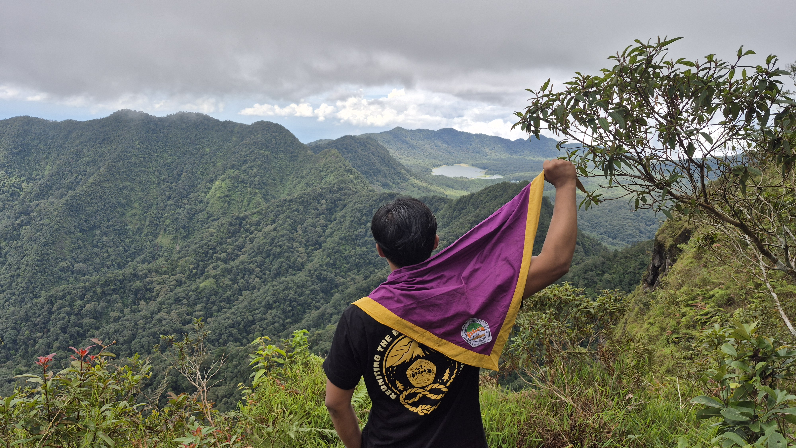
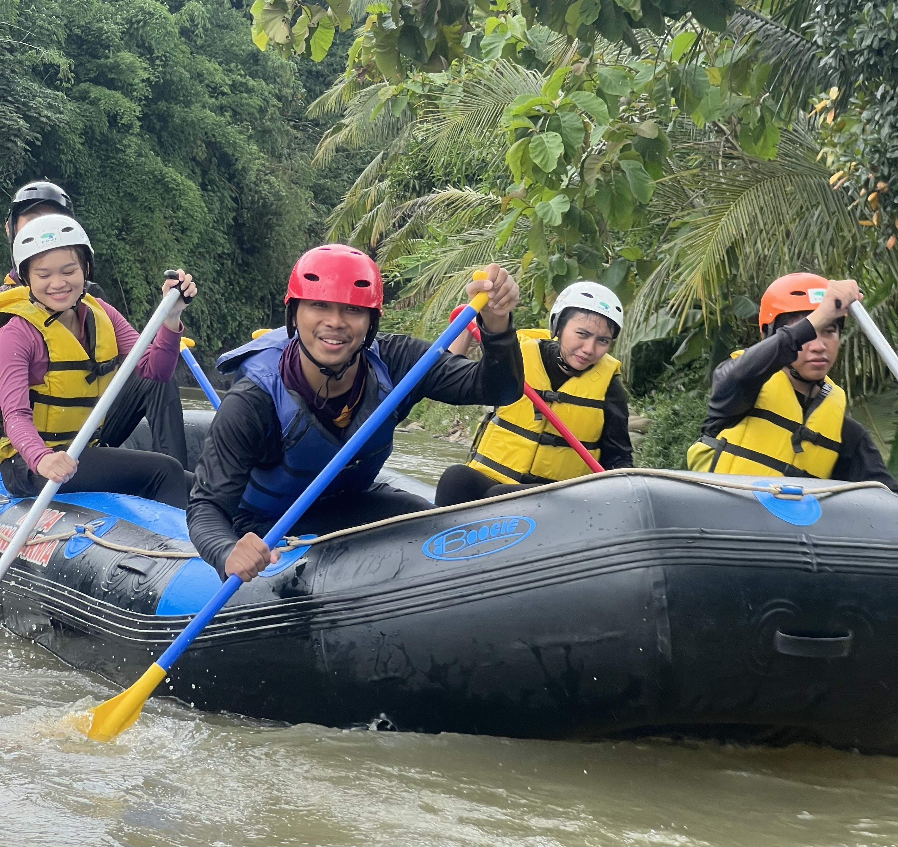
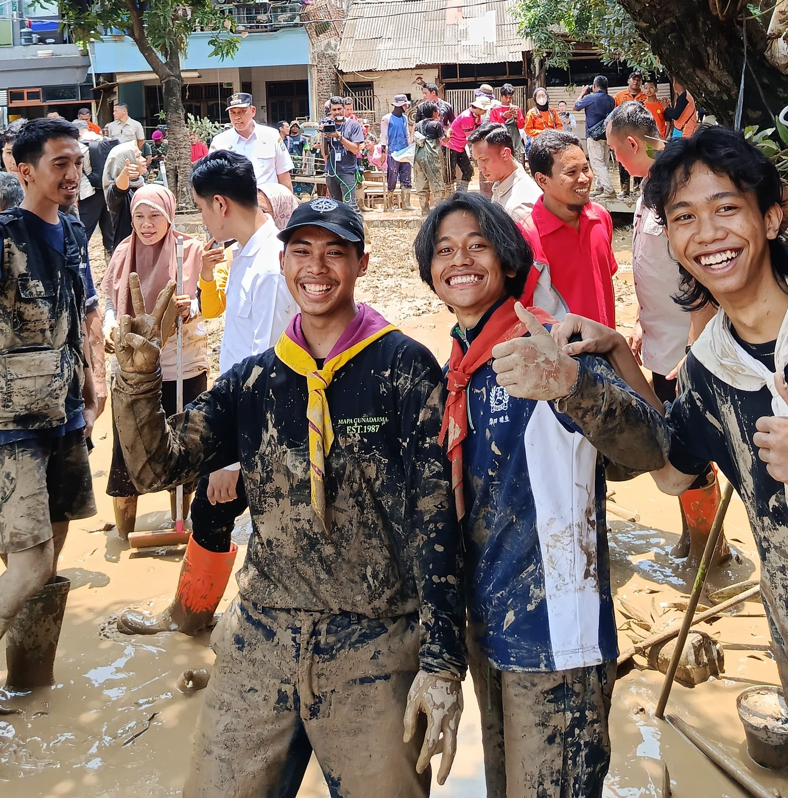
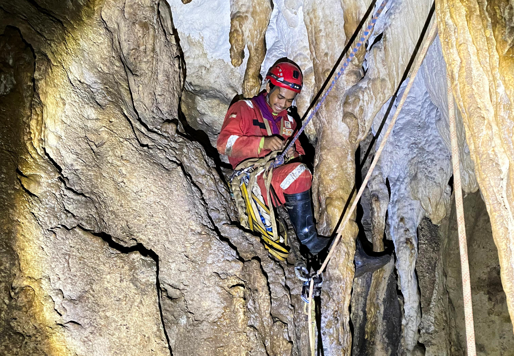
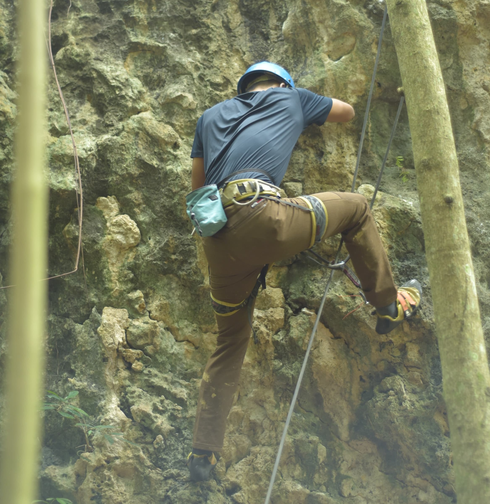
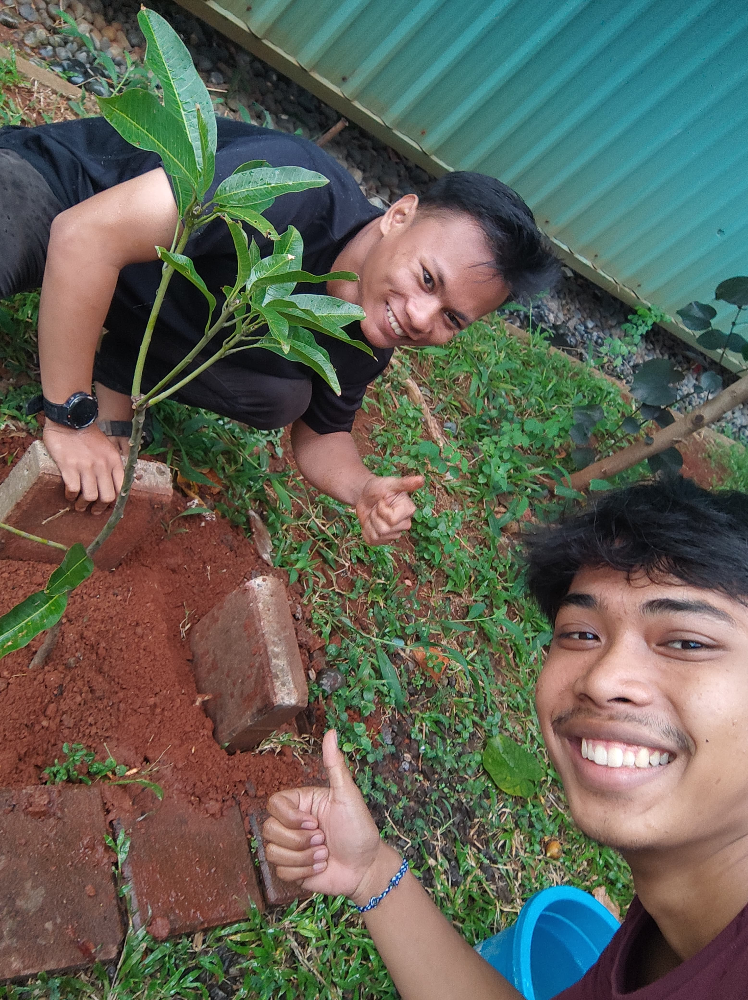
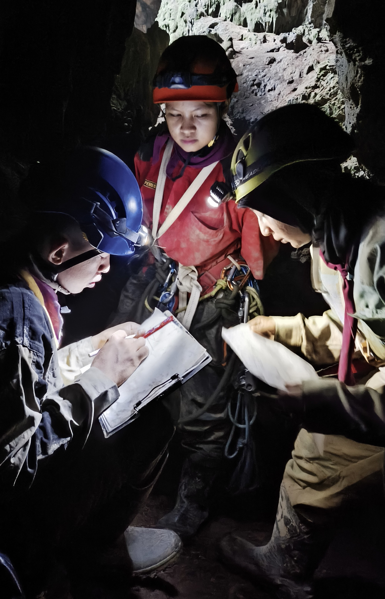
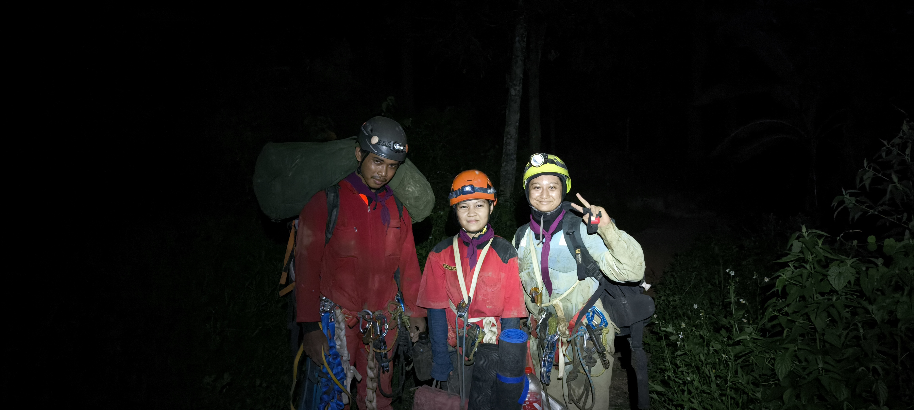

Kegiatan di Luar Perkuliahan

Caving
Penelurusan Gua Sipulus yang terletak di Desa Cibuntu, klapanunggal, Bogor.

Mendaki
Mendaki gunung Burangrang Via Komando dengan pemandangan langsung ke Situ Lembang.

Rafting
Melakukan arung jeram di sungai Cianten, Bogor.

Relawan
Membantu mengevakuasi warga dan membersihkan rumah warga pasca banjir di Bekasi.

Caving
Melakukan rigging atau pembuatan lintasan untuk menuruni gua vertikal. Gua Kraton, Leuwikaret, Bogor.

Rock Climbing
Melakukan pemanjatan tebing Anak Jeger di klapanunggal Bogor.

Menanam Pohon
Menanam pohon mangga Indramayu di depan sekretariat mapala di kampus.

Pemetaan Gua
Melakukan pemetaan Gua Cangkuang, desa Cibuntu, klapanunggal, Bogor.

Caving
Perjalanan pulang ke basecamp setelah penelusuran gua, dengan membawa banyak peralatan besi dan tali.